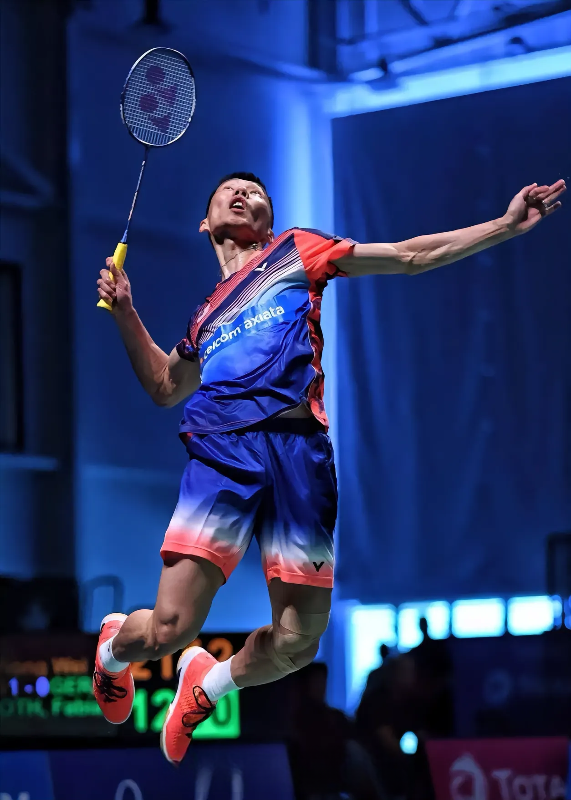

关于梦想与坚持
2. “只要坚持下去，没有什么是不可能的。哪怕一次次跌倒，我也会一次次爬起来，继续朝着目标前进。”它诉说着李宗伟在遭遇挫折，比如多次在奥运会决赛失利后，依然能振作起来，持续投身训练和比赛，相信坚持的力量可以突破困境。

| 首页 | 人生经历 | 重要比赛 | 个人荣誉 | 励志语录 |
|---|
关于梦想与坚持 |
|
|---|---|
| 1. “我只是想打好每一场球，尽我最大的努力去实现自己的梦想，无论结果如何，我都不会后悔。”这句话体现了他专注于过程，为梦想全力以赴且不患得患失的心态，即便面对诸多艰难赛事和强大对手，依然坚守对梦想的追逐。 2. “只要坚持下去，没有什么是不可能的。哪怕一次次跌倒，我也会一次次爬起来，继续朝着目标前进。”它诉说着李宗伟在遭遇挫折，比如多次在奥运会决赛失利后，依然能振作起来，持续投身训练和比赛，相信坚持的力量可以突破困境。 |
|
面对挑战与压力 |
|
|---|---|
| 1. “每一场比赛都是新的挑战，对手越强大，我就越兴奋，因为这是证明自己的最好机会。”李宗伟面对林丹等强劲对手时，不是畏惧退缩，而是将其视为提升自我、彰显实力的契机，这种积极应对挑战的态度难能可贵。 2. “压力就是动力，别人觉得我背负着整个马来西亚的期望，压力很大，但我把它转化成了前进的动力，让我更有斗志去拼搏。”在代表国家出战重大赛事时，他深知肩负的重任，但能巧妙地将外界给予的巨大压力转化为内在的拼搏动力，促使自己在赛场上奋力发挥。 |
 |
关于心态与成长 |
|
|---|---|
| 1. “输赢只是一时的，重要的是从每一场比赛中吸取经验，让自己变得更强。”他不把比赛的胜负看作终点，而是注重在比赛过程中不断学习和成长，通过总结经验来提升自己的竞技水平，为下一次比赛做好准备。 2. “保持好的心态很重要，无论比赛中遇到什么情况，我都告诉自己要冷静，只有冷静才能发挥出最好的水平。”李宗伟深知在紧张激烈的羽毛球赛场上，心态的稳定对发挥有着至关重要的作用，所以始终强调要保持冷静的心态来应对各种突发状况。 |
 |